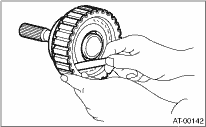

• Inspect the drive plate surface for wear and damage.
• Make sure the snap ring is not worn and the return spring has no permanent distortion, damage, or deformation.
• Inspect the D-ring for damage.
• Inspect the extension end play, and adjust it to be within the standard value.
Model with MP-T 
Model with VTD
1. Check clearance between the snap ring and pressure plate.
2. Before measuring clearance, place same thickness shims on both sides to prevent the pressure plate from tilting.
3. If the clearance exceeds the service limits, replace the plate set (drive plate and driven plate), and select and adjust a retaining plate to be within the initial standard value.
Initial standard:
0.7 — 1.1 mm (0.028 — 0.043 in)
Limit thickness:
1.6 mm (0.063 in)

|
Retaining plate | |
|
Part number |
Thickness mm (in) |
|
31593AA151 |
3.3 (0.130) |
|
31593AA161 |
3.7 (0.146) |
|
31593AA171 |
4.1 (0.161) |
|
31593AA181 |
4.5 (0.177) |
4. Check for tight corner braking phenomenon when the vehicle is moved forward with the steering fully turned. If tight corner braking occurs, perform the following procedures.
(1) With the steering wheel held at fully turned position, drive the vehicle in “D” range and with vehicle speed at approx. 5 km/h (3 MPH) in both clockwise and counterclockwise directions for approx. ten times each, while repeating acceleration and braking intermittently.
(2) If the tight corner braking phenomenon still persists, drive the vehicle again in a circle for several laps.